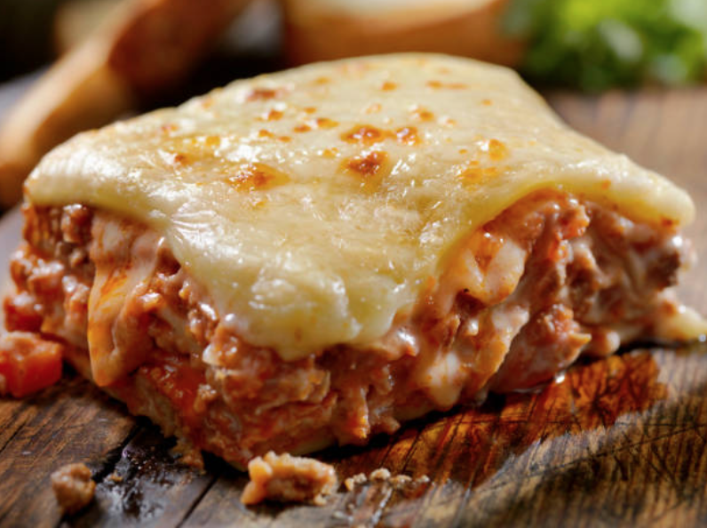

Home
Lasagne

Lasagne
Lasagne is a classic Italian dish made of pasta sheets layered with rich meat sauce, creamy béchamel, and plenty of cheese. It’s the kind of meal that feels special but comforting at the same time—perfect for a family dinner or when you want to impress guests.
The beauty of lasagne is in the layers. As it bakes, the sauces and pasta meld together, topped with a golden, cheesy crust. It’s filling, flavorful, and always a crowd-pleaser.
Ingredients
- 2 tbsp olive oil
- 1 onion, chopped
- 2 garlic cloves, minced
- 1 carrot, chopped
- 500g (1 lb) ground beef (or beef + pork mix)
- 1 can (400g/14oz) crushed tomatoes
- 2 tbsp tomato paste
- 1 cup beef stock
- 1 tsp dried oregano
- Salt and pepper
- 4 tbsp butter
- 4 tbsp flour
- 4 cups milk
- A pinch of nutmeg
- 250g (9 oz) lasagne sheets
- 2 cups mozzarella cheese
- 1 cup Parmesan cheese
Steps
- Make the meat sauce: Cook onion, garlic, and carrot in olive oil. Add ground meat, cook until browned, then stir in tomato paste, tomatoes, stock, oregano, salt, and pepper. Simmer 30 minutes.
- Make the béchamel: Melt butter, stir in flour, then slowly whisk in milk until smooth and thick. Season with salt, pepper, and nutmeg.
- In a baking dish, layer meat sauce, pasta sheets, béchamel, and cheese. Repeat until finished, ending with béchamel and cheese on top.
- Cover with foil and bake at 375°F (190°C) for 25 minutes. Remove foil and bake another 20 minutes until golden.
- Rest: Let sit 10 minutes before slicing and serving.